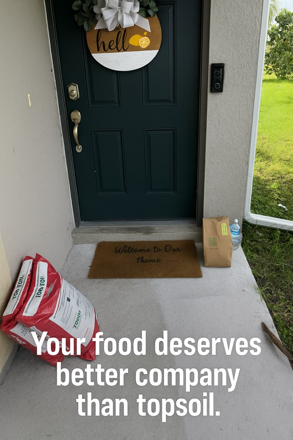
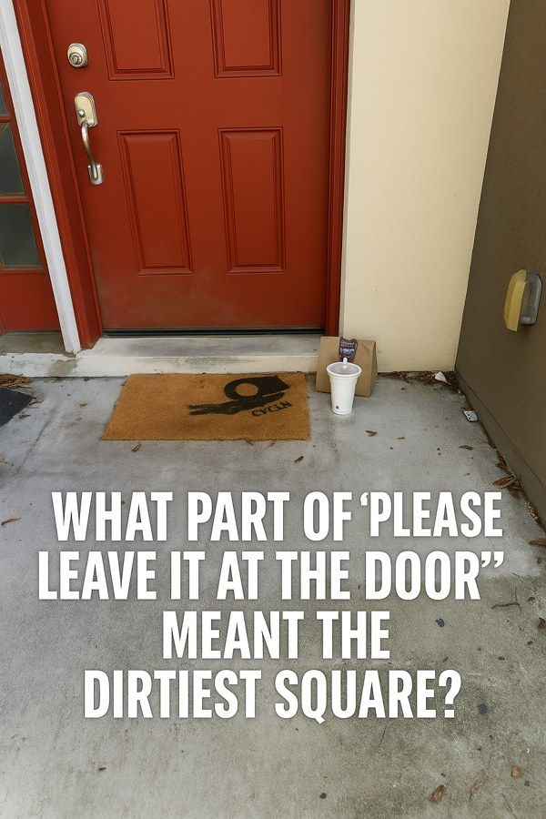
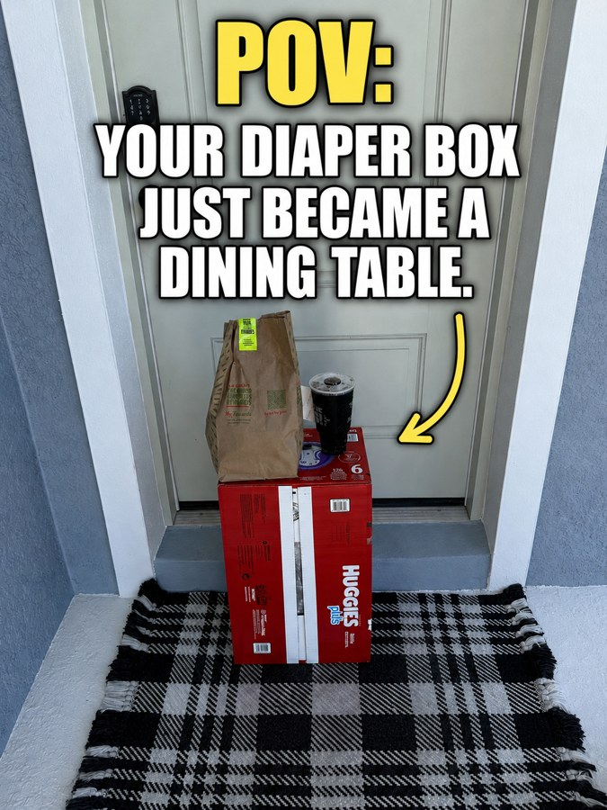

It started in June 2025. Russ was between roles, and his son suggested he try DoorDash for some supplemental income. Why not, he figured. So he signed up.
On his very first delivery, something felt off. The app said "leave at door." He got to the house, looked around, and there was nowhere to actually leave it at the door. No table. No stand. No better option. Just a bag of food, set down on the ground.
"I get to a place and I start to deliver the food. They say leave it at the door. There's not a place for me to leave it at the door. It's just on the ground. So now I've got to leave food on the ground. I don't know anybody that likes that, and I particularly don't like that. There's got to be a better way." — Russ, founder of PorchDrop
At first, it was just a running joke. Between orders, waiting on his phone, Russ started making lighthearted memes about the problem every delivery driver quietly deals with: where exactly is "the door," anyway? He shared them with friends, mostly for a laugh.



By July, the joke had turned into a realization. This wasn't just his problem, it was everyone's. Millions of deliveries were getting left on dirty, wet, unsafe surfaces every single day, and nobody had actually built anything to fix it.
So he started treating it like one. Through August and September, Russ shifted from driver to amateur product developer, researching materials, manufacturing options, and whether the idea was even feasible at a price people would actually pay. He brought in an unlikely collaborator for the early specs.
"I came back and started working with my good friend. You probably know them as ChatGPT. We put our heads together to figure out how to build a better mousetrap. We wanted to elevate the food, get it up off the ground. We wanted the right height, a cool name, the right material so it withstands the weather. And we wanted it to fit somewhere that it's not going to be too obtrusive on a porch." — Russ, founder of PorchDrop
The name came together fast: PorchDrop. The harder part was everything underneath it, the actual engineering of a table that could survive Florida weather, hold real weight, and still look like something you'd want sitting by your front door.
First DoorDash delivery. The "leave at door" problem shows up on day one.
The joke becomes a real idea. Russ starts treating it like a problem worth solving.
Product research, material selection, and manufacturing feasibility, with early concepting help from ChatGPT.
Provisional patent approved. Trademark filed for PorchDrop.
Key collaborators join the mission, helping shape a real plan to bring the idea to life.
Brand development, early visuals, and a landing page come together.
Heads-down on Kickstarter prep: refining the product, the message, and the story.
The prototype order is placed with a manufacturing partner.
The prototype arrives. First photo shoot, first real-world tests, right at the front door.
Once the prototype showed up, there was only one real way to find out if it worked: put it at the front door and order something.

Test 1: Pizza, no-contact, DoorDash
Russ placed an order, selected "Leave at Door," and waited. The Dasher set it right on the PorchDrop, off the ground, exactly where it was supposed to go, no instructions needed.

Test 2: A package, Amazon
Russ left the table out for a package delivery too. Same result: an obvious, elevated spot that worked just as well for a box as it did for dinner.
With a working prototype and real proof it solved the problem, the next step was making PorchDrop a real, buyable thing instead of a one-off table on one porch in Tampa. That meant bringing in help, because as Russ puts it:
"One of the things that is glaringly apparent is I'm not good at everything. I'm not good at marketing, I'm not good at video, I'm not good at social networking, I'm not good at finance, I'm not good at business excellence. But I know who is." — Russ, founder of PorchDrop
With the team in place, PorchDrop went from a table on one Tampa porch to a real, buyable product. The first production batch is in motion now, shipping December 2026.
The problem hasn't changed since June 2025: deliveries keep landing on the ground, and nobody designed anything to stop it. PorchDrop is still just trying to fix that, one porch at a time.
Pre-order now · $34.99